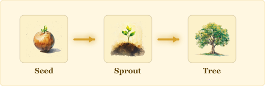
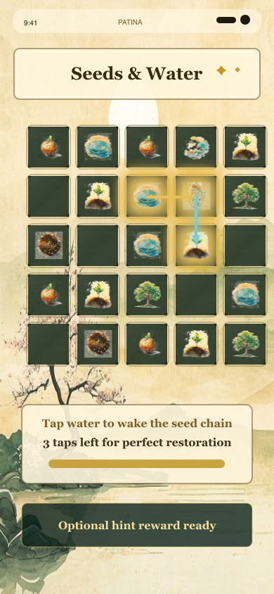
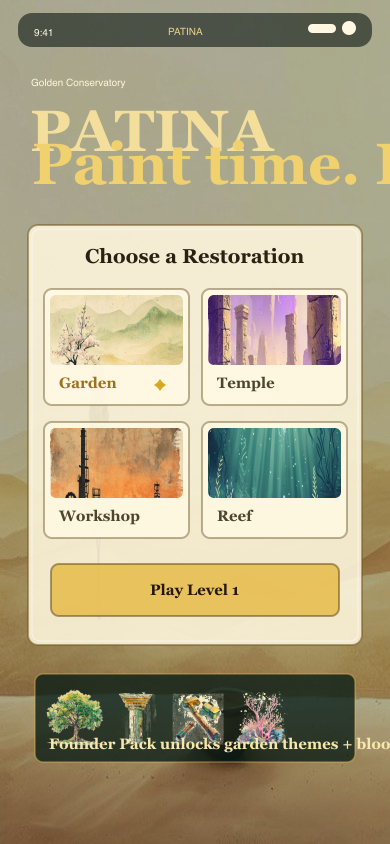
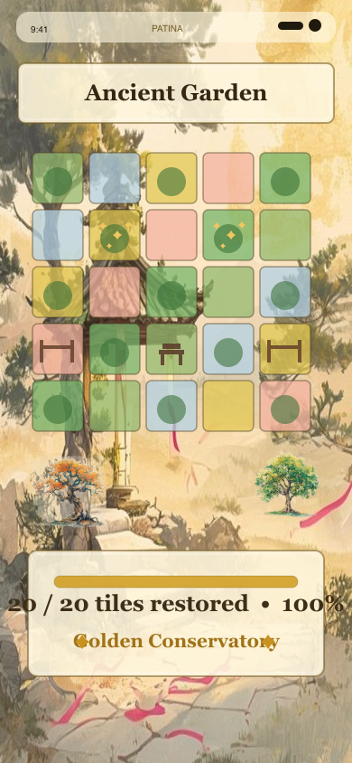
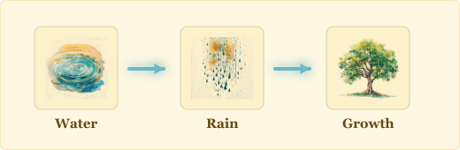
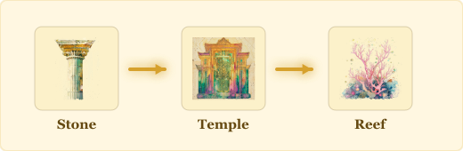
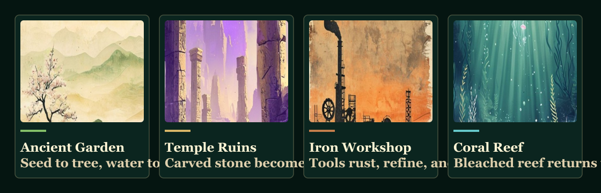

Tap to age
Seed becomes sprout, tree, old tree, fallen log, and soil. Water becomes ice, mist, cloud, rain, then returns to water.
Time-painting puzzle game
Paint Time. Solve Worlds.
Tap objects to age them through time, chain transformations, and restore forgotten gardens, ruins, and living scenes.



The game
PATINA’s hook is time-painting: every tap moves a material forward in time, and the best moves turn the whole board into a living cascade.

Seed becomes sprout, tree, old tree, fallen log, and soil. Water becomes ice, mist, cloud, rain, then returns to water.

Water wakes seeds, mist rusts metal, carved stone joins into temple walls, and restored cells unlock scenery.

Each puzzle feeds a visible restoration: gardens fill, ruins rebuild, workshops return, and reefs regain color.
Designed for mobile
Restoration worlds
The site now uses PATINA’s actual game backgrounds so the identity is garden, stone, metal, and reef rather than a generic policy page.

Seeds, water, soil, trees, and quiet restoration.
Stone, carved pillars, rubble, and rebuilt walls.
Metal, tools, rust, corrosion, and workshop revival.
Kelp, coral, pearls, driftwood, and living color.
Beyond level clear
The game should not only say a player restored a place. It should let them see tiles fill, decorations appear, and premium effects change the mood of the garden.
Complete a compact tap-to-age puzzle.
Use earned points to bring a scene tile back to life.
Equip garden themes, transformation FX, and founder decorations.
Player trust
PATINA uses Google AdMob for optional rewarded ads and limited interstitial ads, with Google UMP consent where required.
Purchases are handled through the platform store. PATINA does not receive payment card details.
Progress is stored locally on the device unless a future online feature is clearly added and documented.